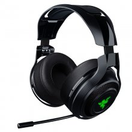

Catalogo cascos
Con nuestra letal línea de auriculares y parlantes avanzados, experimente un audio claro y potente que crea paisajes sonoros increíbles para un nuevo nivel de inmersión y obtenga una ventaja competitiva con el sonido envolvente de próxima generación.